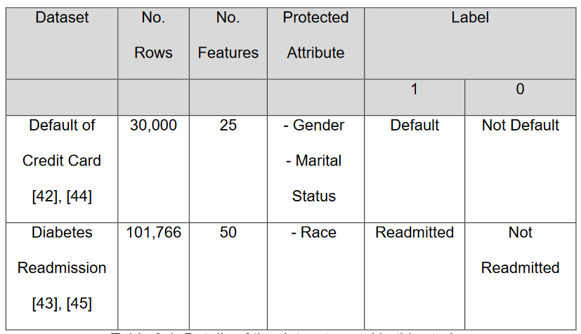

Abstract
Fairness in machine learning is growing in attention where recent methods have addressed the discrimination between particular demographic groups that contain attributes classified as sensitive that include age, gender and race. Studies have also shown if the dataset itself is biased, it can lead to unfair decision making when used in training models.
In this paper, I propose a framework combining a number of classification algorithms, fairness metrics and feature explainability methods to highlight and potentially address bias generation resulting from the training data.
Research Purpose
This report aims at casting light on the problem of model transparency and propose a frameowrk addressing the main challenge of a dataset:
How do individual training data entries influence biased and inaccurate results?
How can identifying biased entries be used to improve representation in the datasets to improve both fairness and accuracy?
Aim
Identifying and promoting the fairness of AI applications and machine learning techniques in the industry.
Objectives
This report achieved the first two objectives but where the third objective was not met, this will be proposed as future work to be future work to be pursued.
Methodology
Two binary classification datasets were used in this paper - Credit Card Default and Diabetes Readmission. Each of the two datasets contains at least one identified protected attribute that could influence the outcome of a prediction.
A number of performance indicators were used in this paper to measure the model's behaviour. They include the ROC (Receiver Operating Characteristic) Curves, AUC (Area under the ROC Curve), Accuracy, Precision, F1-Score and Specificity. Two fairness metrics - FairML and LIME - were selected to analyse any undesired bias in the training data / model.
Two classification models were used in this study - Random Forest and LightGBM. RandomizedSearchCV and GridSearchCV were used to carry out hyperparameter tuning.
Results
The results as an entirety did not indicate that the designated sensitive attributes play a major role in the model's results although it cannot be concluded as such. The performance metrics were not at it's peak performance as a result of an attempt of preserving the integrity of the original dataset as best possible.
Conclusion
Although there was insufficient evidence to prove that there was significant bias in the dataset, the feature importance of the Diabetes Readmission dataset using the LightGBM model did indicate that the designated sensitve attribute (race) was a major influence on the model's output. This paper does not conclude that it is sufficient to rule out the possibility of sensitive attributes influencing the model's output and hence, the presence of bias.
This paper also argues that accuracy should not be the only performance indiciator of a model, the performance metrics were not adapted to preserve the integrity of the original dataset as much as possible to create a baseline indicater of model performance to perform bias quantification in the future.
Tjos paper as a whole addressess the legality, ethics and professionalism of the use of AI applications in the industry. The provision, utilisation and management of an automated decision-making system may be legal and professional in the industry but the key issue being addressed and is aimed at resolving is raising the awareness of the ethics of how those systems manage the data flowing through it.
Future Work
This paper proposes the involvement of technical expertise to interpret the results of the LIME model's outputs to aggregate local input's feature importance to identify specific entries that are influencing the overall model's performance. The future aim for the aggregate quantification for individual inputs would be to identify how sensitive or protected attributes contribute to the over or under-representation in the dataset and hence, be able to improve the training dataset.